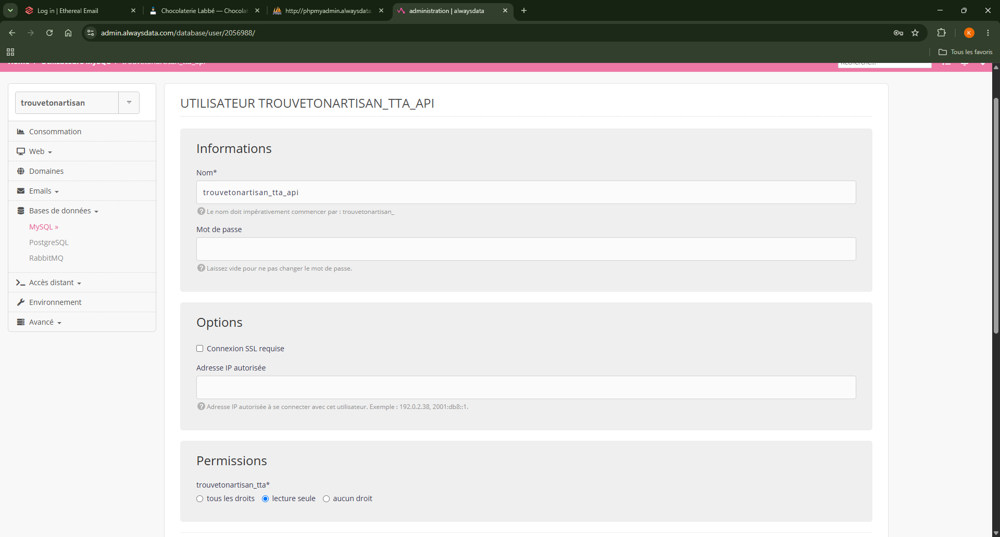
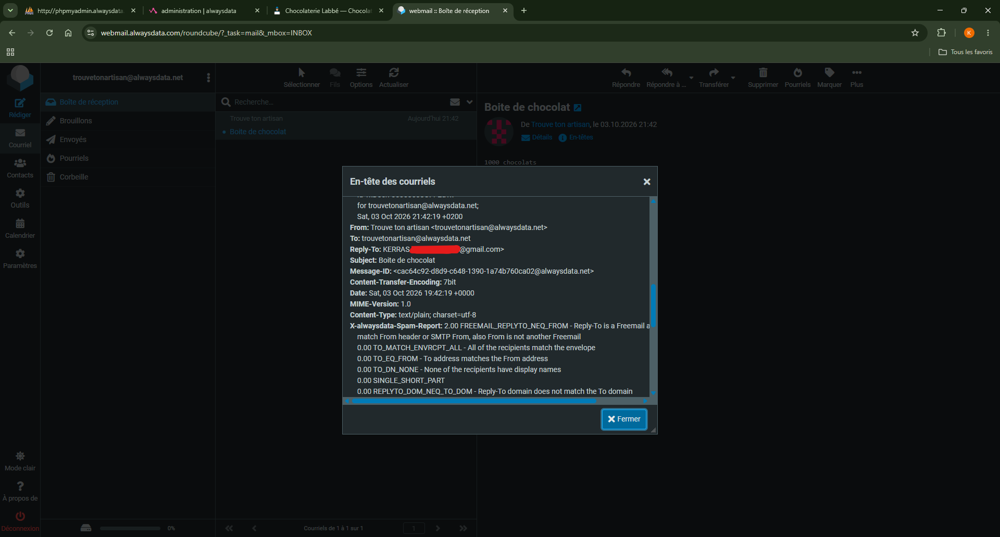
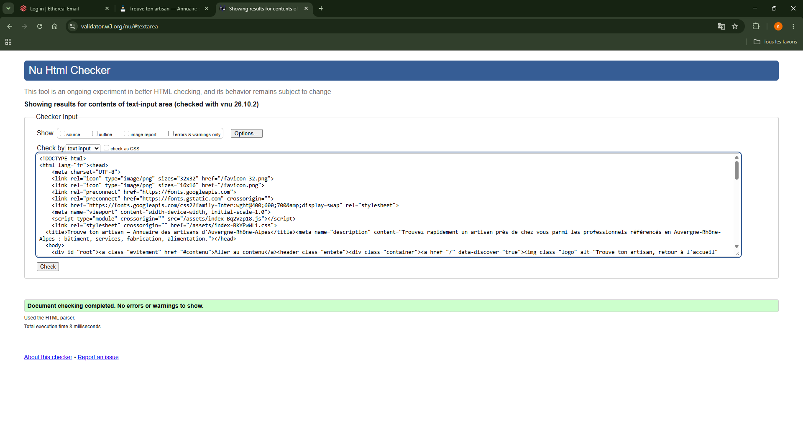
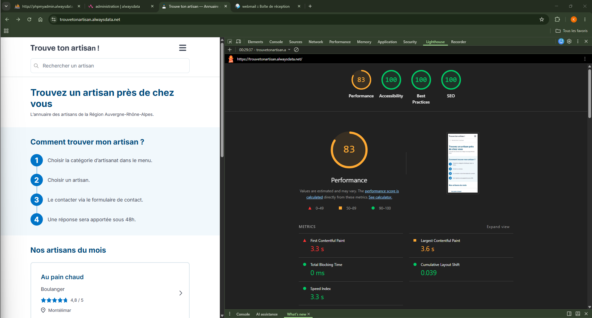

Kerras Zahcaria · octobre 2026
« Une mesure de sécurité qu'on ne sait pas expliquer n'est pas une mesure : c'est une ligne de code recopiée. »
| Le site | https://trouvetonartisan.alwaysdata.net |
| Le code | https://github.com/LePlankton/trouve-ton-artisan |
| Côté navigateur | React 19, React Router 7, Vite, Bootstrap 5.3 personnalisé en Sass |
| Côté serveur | Node.js, Express 5, Sequelize 6, MySQL, Nodemailer |
| Objet du dossier | Les mesures de sécurité mises en place, la démarche de veille, et les arbitrages assumés |
Huit parties. Les deux premières posent le contexte, les quatre suivantes forment le cœur du dossier, les deux dernières assument ce qui n'a pas été fait.
Ce dossier raconte autant ce que j'ai corrigé que ce que j'ai décidé de ne pas corriger. Les deux sont des choix d'ingénierie.
Un annuaire régional d'artisans, à construire de la maquette jusqu'à la mise en ligne.
La Région Auvergne-Rhône-Alpes souhaite un site permettant de trouver un artisan près de chez soi et de le contacter directement. Le parcours attendu tient en quatre étapes.
Le cadre était imposé : une maquette Figma à respecter, un jeu de données fourni, et une pile technique précise — React avec Bootstrap côté navigateur, Node.js avec Express et une base MySQL côté serveur.
| Page | Rôle |
|---|---|
| Accueil | le parcours en quatre étapes, et les artisans mis en avant |
| Catégorie | la liste des artisans d'une catégorie |
| Recherche | la liste filtrée par le nom saisi dans l'en-tête |
| Fiche artisan | le détail, et le formulaire de contact |
| Pages légales et 404 | mentions, accessibilité, données personnelles, cookies, et toute adresse inconnue |
Trois briques — un navigateur, un serveur, une base — et quelques décisions qui ont structuré tout le reste.
Le navigateur ne parle jamais à la base : il passe par l'API, qui seule détient les identifiants.
Cette séparation n'est pas une formalité d'architecture, c'est une mesure de sécurité. Les identifiants de la base ne quittent jamais le serveur, et l'API décide de ce qu'elle expose — ce qui, on le verra, demande d'être explicite.
Trois tables : categorie, specialite, artisan. Un artisan appartient à une spécialité, une spécialité appartient à une catégorie. Quatre décisions méritent une explication.
| Décision | Pourquoi |
|---|---|
Aucune clé étrangère directe entre artisan et categorie | la catégorie se déduit de la spécialité ; deux chemins vers la même information finiraient par se contredire |
DECIMAL(2,1) pour la note, pas FLOAT | une note se compare et s'affiche à l'identique : il faut une valeur exacte, pas une approximation binaire |
utf8mb4_unicode_ci | les accents s'affichent correctement, et une recherche sur « labbe » trouve « Labbé » |
| Noms de tables en minuscules | sous Linux, la casse compte ; ce choix fait en développement a évité une panne en production |
En développement, deux serveurs tournent : l'API sur un port, le site sur un autre. En production, l'offre d'hébergement retenue n'autorise qu'un seul site. L'API sert donc aussi les fichiers construits du front.
Avec une seule origine, la question des requêtes entre domaines disparaît : le site appelle /api, en relatif. Une adresse à configurer au lieu de deux, un déploiement au lieu de deux, et une source d'erreur en moins.
Une règle d'ordre devient alors critique : les routes de l'API doivent être déclarées avant celle qui renvoie la page du site pour toute adresse inconnue. Dans l'autre sens, les appels de données recevraient du HTML.
Côté serveur, quatre dossiers qui séparent les responsabilités : config pour les connexions, models pour les tables, controllers pour la logique, routes pour les adresses. Côté navigateur, les pages d'un côté, les composants réutilisables de l'autre, et tous les appels à l'API regroupés dans un seul fichier.
Ce dernier point a servi plus tard : changer l'adresse de l'API entre développement et production n'a demandé de toucher qu'un endroit.
Dix-huit mesures, regroupées par ce qu'elles protègent. Pour chacune : ce qu'elle empêche, et ce qu'elle n'empêche pas.
| Niveau | Mesures |
|---|---|
| Base de données | compte en lecture seule, requêtes paramétrées, jeu de caractères explicite |
| Serveur | secrets hors du code, en-têtes de sécurité, limite de taille, erreurs muettes, démarrage bloquant |
| Formulaire | validation serveur, limitation de débit, destinataire issu de la base, expéditeur non usurpé |
| Navigateur | échappement automatique, aucun secret livré, noreferrer, double envoi bloqué |
| Mise en ligne | mots de passe distincts, HTTPS, variables d'environnement, données de test neutralisées |
L'application se connecte avec un utilisateur dédié qui possède le seul droit de lecture, uniquement sur la base du projet. Au début j'utilisais le compte administrateur, ce qui est commode et absurde : mon site ne fait que des SELECT.
La barre de recherche envoie du texte libre. Si je l'insérais dans la requête, on pourrait y glisser du SQL. Sequelize envoie la valeur séparément de l'instruction : le moteur sait que c'est une donnée, jamais du code.

Le moindre privilège vérifié en production : #1142 — UPDATE command denied. Le compte de l'application se voit refuser une écriture, sur le serveur réel.
J'ai rencontré ce refus sans l'avoir cherché, en voulant modifier des données depuis l'interface d'administration alors que j'étais connecté avec le compte applicatif. Je n'ai pas élargi ses droits : j'ai changé d'identité le temps de l'opération. Une protection ne se démonte pas pour une tâche ponctuelle.
Aucun mot de passe dans le code. Tout vit dans un fichier d'environnement ignoré par Git depuis le premier commit. À côté, un fichier d'exemple versionné porte les mêmes clés avec des valeurs vides : c'est la documentation de ce qu'il faut renseigner. J'ai vérifié à chaque commit que le vrai fichier ne partait pas — un secret publié une fois est à considérer comme perdu, même supprimé ensuite.
Des en-têtes de sécurité posés automatiquement. Helmet ajoute notamment l'interdiction de deviner le type d'un fichier, l'interdiction d'afficher le site dans un cadre, et l'imposition du HTTPS pour les visites suivantes. Il retire au passage l'en-tête qui annonçait la technologie du serveur à qui voulait la lire.
Une limite de taille sur les requêtes (100 ko). Sans elle, il suffit d'envoyer un fichier énorme pour saturer la mémoire du serveur.
Des erreurs qui ne racontent rien. Un gestionnaire unique journalise le détail côté serveur et ne renvoie au visiteur qu'un message neutre. Il reprend le code porté par l'erreur quand il y en a un, et retombe sur 500 sinon.
Au visiteur : « Une erreur est survenue. » Au journal : le type, la requête, la trace complète. Le même incident, raconté deux fois, avec deux niveaux de détail — parce qu'un message technique renseigne autant l'utilisateur perdu que l'attaquant curieux.
Le serveur refuse de démarrer sans sa base. Si la connexion échoue, il s'arrête avec un code d'erreur au lieu de tourner en répondant n'importe quoi. Vérifié pour de vrai, en coupant le serveur MySQL.
Chaque requête énumère les champs qu'elle renvoie. C'est le point sur lequel je me suis fait prendre — j'y reviens en partie 5.
C'est la seule porte d'entrée du site : la seule route qui accepte des données du public, et la seule qui déclenche une action vers l'extérieur. Elle concentre donc quatre mesures.
Tout est revérifié côté serveur. Champs obligatoires, longueurs maximales, présence d'un @ dans l'adresse. La validation du navigateur est un confort pour l'utilisateur, pas une protection : on peut appeler l'API sans passer par ma page.
Cinq envois par quart d'heure et par adresse IP. Sans limite, un robot martèle le formulaire : l'artisan reçoit des centaines de messages et le compte d'envoi se fait bloquer pour abus. La limite ne vise que cette route — consulter le catalogue reste libre.
Le destinataire vient de la base, jamais de la requête. L'adresse de l'artisan est retrouvée à partir de son identifiant. Si le navigateur pouvait dire « envoie à telle adresse », le serveur deviendrait une machine à spam ouverte à tous.
L'expéditeur est le site, le visiteur est en adresse de réponse. J'avais d'abord mis l'adresse du visiteur comme expéditeur. Ça fonctionnait sur un serveur de test, mais en conditions réelles les contrôles du destinataire vérifient si mon serveur a le droit d'écrire au nom de ce domaine — et la réponse est non.

Les en-têtes d'un message réellement reçu. From porte le domaine du site ; Reply-To porte l'adresse du visiteur.
Le rapport anti-spam visible sur cette capture attribue 2 points sur un seuil de 5 à la ligne « adresse de réponse chez un fournisseur grand public, différente de l'expéditeur » — c'est-à-dire exactement le motif que j'ai mis en place. Il ressemble à une technique de spammeur. Sans lui, le message serait purement rejeté pour usurpation. Deux points, c'est le prix.
Aucun secret dans la configuration du front. Tout ce qui y est déclaré se retrouve dans les fichiers livrés au navigateur et reste lisible par n'importe qui. Il n'y a donc que l'adresse de l'API, qui est publique de toute façon.
React échappe le texte par défaut. Un nom contenant une balise s'afficherait tel quel au lieu d'être interprété. C'est une protection intégrée contre l'injection de code dans la page, qui ne saute que si l'on emploie explicitement la fonction prévue pour insérer du HTML brut — ce que je ne fais nulle part.
Les liens externes portent rel="noreferrer", puisqu'ils s'ouvrent dans un nouvel onglet. Sans cela, la page ouverte peut remplacer la mienne par une copie.
Le bouton d'envoi se désactive pendant la requête, ce qui évite le double clic — donc le double message, et deux appels comptés par la limitation au lieu d'un.
Le serveur n'accepte les requêtes du navigateur que depuis une liste d'origines déclarées explicitement, sans caractère générique en production.
| Mesure | Raison |
|---|---|
| Mot de passe de base différent de celui du poste de développement | si l'un fuite, l'autre tient |
| Mot de passe de la boîte d'envoi distinct des deux autres | un secret, un usage |
| Secrets saisis dans les variables d'environnement de l'hébergeur | le dépôt ne transporte que la liste des clés |
| HTTPS avec redirection automatique | le formulaire transmet des données personnelles |
| Origines autorisées déclarées explicitement | pas de caractère générique en production |
Le jeu de données fourni contient des adresses e-mail d'apparence réelle, chez de vrais fournisseurs. Tant que le site tournait sur ma machine, aucune conséquence. En ligne, le formulaire pouvait réellement écrire à ces personnes — et n'importe quel visiteur pouvait le déclencher.
J'ai donc redirigé ces adresses vers une boîte que je contrôle, uniquement dans la base hébergée : le script de remplissage livré conserve les données imposées. La démonstration reste complète, et personne n'est importuné.
Pas une collection de liens : une routine, des critères de tri, et une trace écrite des décisions.
Un projet qui fonctionne le jour de sa livraison ne fonctionne pas pour autant six mois plus tard. Les failles se découvrent après coup, dans des bibliothèques qu'on n'a pas écrites. La veille n'est donc pas un supplément : c'est la condition pour qu'un site reste sûr une fois livré.
| Source | Ce que j'y cherche |
|---|---|
| CERT-FR (ANSSI) | les alertes officielles, en français, avec un niveau de gravité |
| OWASP Top 10 | la grille de lecture : les dix familles de failles les plus courantes |
npm audit | les vulnérabilités connues dans mes propres dépendances |
| Alertes Dependabot | la même chose, mais signalée automatiquement sur le dépôt |
| Notes de version de Node.js | les versions correctives, et ce qu'elles corrigent |
| MDN | comprendre un en-tête HTTP ou un mécanisme du navigateur, plutôt que le recopier |
Pour l'accessibilité, je croise trois outils — un audit intégré au navigateur, une extension spécialisée, et le validateur HTML du W3C — et aucun ne remplace le parcours de la page au clavier. C'est souvent là que je trouve ce qu'aucun outil n'a signalé.
Trois moments, trois objectifs différents. L'objectif hebdomadaire n'est pas de tout lire, mais de repérer ce qui touche à ce que j'utilise.
C'est le point que j'ai compris en cours de projet. Ma démarche est toujours la même : je regarde ce qui est sorti, je garde ce qui concerne mon projet, je décide d'appliquer ou non, et je note la décision.
Une veille sans trace écrite ne sert à rien : six mois plus tard, on ne sait plus si une alerte a été évaluée ou simplement ignorée. Écrire le raisonnement — y compris celui qui conduit à ne rien faire — est ce qui transforme une lecture en décision.
Quinze incidents réels relevés pendant le projet. En voici les plus instructifs, avec à chaque fois le symptôme, la cause, et ce que j'en retiens.
Dépendances Après l'installation de la bibliothèque d'envoi d'e-mails, npm audit a signalé une faille de gravité moyenne dans une dépendance indirecte de Sequelize. La correction automatique proposée rétrogradait Sequelize de plusieurs versions majeures — autant dire qu'elle cassait tout le projet.
J'ai lu le détail de l'alerte : la faille concerne un usage précis de cette bibliothèque que mon code ne fait pas. J'ai donc choisi de ne rien changer, de noter l'alerte, et d'attendre la mise à jour de la dépendance.
Appliquer aveuglément la correction proposée aurait cassé le projet pour une faille qui ne me concernait pas. Une veille, ce n'est pas exécuter ce que l'outil recommande : c'est évaluer si l'alerte s'applique à mon cas, puis décider.
Fuite d'information Mes pages d'erreur racontaient tout. En provoquant une erreur de base de données, j'ai vu s'afficher dans le navigateur l'arborescence complète de mon disque, le chemin de mes fichiers et la version de ma bibliothèque. C'est le comportement par défaut du framework. Pour quelqu'un qui cherche une faille, c'est une carte du terrain.
Données personnelles Mon API publiait les adresses e-mail des artisans. La route de détail faisait une requête sans énumérer les colonnes attendues : la bibliothèque renvoyait donc toute la ligne, e-mail compris, sur une route publique. Mon interface n'affichait jamais cette adresse — elle sortait quand même, lisible par quiconque appelait l'API directement.
Sans liste explicite, toute colonne ajoutée plus tard à la table sortirait automatiquement dans l'API : un numéro de téléphone, un commentaire interne, un mot de passe. Personne ne s'en apercevrait, puisque l'interface ne les afficherait pas. C'est une fuite silencieuse — et, s'agissant de données personnelles, un manquement au principe de minimisation.
Fuite d'information Un en-tête qui annonçait ma technologie. Repéré en lisant les en-têtes de réponse d'une route. Le retirer ne coûte rien.
Panne silencieuse Une limite de taille mal orthographiée. J'avais écrit l'unité à la française au lieu de l'anglaise. Le framework n'a pas protesté au démarrage : il a simplement compris « 10 octets », et tout formulaire aurait été refusé. Aucune erreur visible tant qu'on ne teste pas réellement — ce qui vaut pour beaucoup de réglages de sécurité.
Régression Un code d'erreur écrit en dur. En traitant le cas d'un corps de requête trop volumineux, j'avais figé le statut correspondant… ce qui faisait répondre « votre message est trop long » à toutes les pannes, base de données coupée comprise. Le bon réflexe était de reprendre le code porté par l'erreur et de ne retomber sur l'erreur générique que par défaut.
C'est l'erreur la plus intéressante que j'ai commise : elle passait tous mes tests, puisque je testais le cas que je venais de corriger.
Configuration Mon propre filtrage d'origines m'a bloqué. En testant la version construite, toutes les requêtes échouaient. L'API répondait pourtant : c'est le navigateur qui refusait de me transmettre la réponse, parce que le port de prévisualisation n'était pas autorisé. J'ai perdu dix minutes de plus à cause d'une barre oblique finale écrite en trop — une origine, c'est un protocole, un hôte et un port, rien d'autre.
Production Une page blanche que je ne pouvais pas voir en développement. Une fois en ligne, une page de catégorie ne s'affichait plus du tout : écran vide, et dans la console une erreur de lecture sur une valeur indéfinie. L'API, elle, répondait correctement.
L'explication : les catégories sont chargées par le gabarit commun, et pendant ce temps la page cherchait la sienne dans un tableau encore vide. Je n'avais jamais vu le défaut parce que j'arrivais toujours sur cette page en cliquant dans le menu, donc après le chargement. Un visiteur qui colle l'adresse ou arrive depuis un moteur de recherche, lui, démarre de zéro.
J'avais protégé l'affichage du titre, mais pas la métadonnée juste au-dessus — et une seule lecture non protégée suffit à faire tomber toute la page. Depuis, je teste chaque type d'adresse en la collant directement dans la barre du navigateur, jamais seulement en naviguant.
Production Linux ne pardonne pas les majuscules. Une requête sur une table a échoué en production avec « n'existe pas », alors que la table est bien là. Sur le serveur, les noms sont sensibles à la casse, contrairement à mon environnement de développement sous Windows. Mes modèles déclaraient déjà le nom exact en minuscules — c'est ce qui a sauvé l'application. Le vrai « ça marche chez moi ».
Déploiement Un correctif qui ne corrigeait rien. J'ai cherché une demi-heure pourquoi une correction de l'interface restait sans effet en ligne. Elle était faite, construite, envoyée — mais j'avais lancé la commande de transfert depuis la session distante, si bien qu'elle cherchait les fichiers sur le serveur au lieu de ma machine. Aucune erreur signalée.
Les fichiers construits portent une empreinte dans leur nom. Si elle n'a pas changé après un déploiement, c'est que rien n'est arrivé. Ce contrôle de dix secondes m'aurait évité une demi-heure de recherche.
Performance Une image onze fois trop grande, et une autre à 585 ko. Mon logo faisait 1401 pixels de large pour un affichage à 127, et la photo de la fiche artisan pesait près de 600 ko. La règle que j'applique depuis : exporter au double de la taille d'affichage — pour les écrans à haute densité — et pas plus.
Référencement Un « s » oublié qui m'a coûté huit points. L'audit signalait un fichier de racine invalide, avec vingt et une erreurs. Le contenu analysé était en réalité la page d'accueil du site : mon fichier était mal nommé, et la requête tombait donc sur la règle qui renvoie l'application pour toute adresse inconnue. Un fichier qui n'existe pas se comporte comme un fichier au contenu absurde.
Quatre domaines mesurés, avant et après correction, sur la version réellement livrée.
Trois principes, appris en cours de route :
Les outils automatiques détectent environ la moitié des problèmes : ceux qui se mesurent. Ils ne savent pas si un texte alternatif décrit vraiment l'image, ni si l'ordre de lecture a du sens. Un score parfait signifie « aucun défaut automatiquement détectable », rien de plus.
Score de 100 sur l'accueil et sur la fiche artisan, en ligne. Deux corrections l'ont permis.
Les textes d'invite des champs étaient illisibles. En mesurant, j'ai trouvé un rapport de contraste de 1,7:1 là où la norme en demande 4,5. La couleur venait directement de mon système de design, où je l'avais choisie « pour que ça ne gêne pas ». C'est précisément le problème : un texte d'invite porte une information, il doit se lire. Je suis passé à une valeur mesurée à 5,4:1 — et j'ai corrigé la maquette aussi, sinon mes deux livrables se contredisaient.
Une règle de style écrite sur une balise sans classe repeignait tous les paragraphes du site, y compris ceux écrits en blanc sur fond coloré — et cassait le contraste d'une page que je n'avais pas touchée. Je vérifie désormais qu'aucun fichier de style ne cible une balise nue.
Au-delà des outils : un lien d'évitement en tête de page, un parcours complet au clavier sur chaque écran, un seul titre principal par page, et des contours de focus toujours visibles.

Validation W3C de la page d'accueil : aucune erreur.
Valider une application dont le HTML est produit par le navigateur demande une méthode particulière : on copie le document tel qu'il est rendu, et on n'oublie pas d'ajouter la déclaration de type en première ligne — la copie ne l'inclut jamais, et son absence provoque une erreur trompeuse.
Score de 100. Chaque page porte un titre et une description qui lui sont propres, construits à partir des données affichées : la fiche d'un artisan annonce son nom, sa spécialité et sa ville.
Deux corrections ont été nécessaires : supprimer les métadonnées en double — le fichier de base et l'application en déclaraient chacun un jeu — et renommer correctement le fichier destiné aux robots d'indexation.
Accueil, mesuré en ligne. Le score de performance est la médiane de trois lancements.

Accessibilité, bonnes pratiques et référencement à 100, décalage de mise en page nul.
Les logos ne réservaient pas leur place. Sans dimensions déclarées, le navigateur leur donne une hauteur nulle jusqu'à l'arrivée du fichier — et toute la page sursaute. Quatre attributs ajoutés, et l'indicateur est passé de 0,518 à 0. Le style continue de commander la taille réelle ; les attributs ne servent qu'à réserver l'espace.
La police était chargée chez un tiers. Deux domaines externes, une feuille de style bloquante et un fichier de police, soit environ 1,2 seconde avant le premier pixel. En hébergeant la police avec le site, ces requêtes disparaissent.
Chaque appel à un service de polices distant transmet l'adresse IP du visiteur à un tiers, sans son consentement. La CNIL recommande explicitement l'auto-hébergement des polices. Le gain de temps est réel ; la mise en conformité l'est davantage.
Un conseil de l'outil n'a pas été suivi : il proposait de réduire les logos à leur taille d'affichage exacte. Mes fichiers font déjà le double, ce qu'il faut pour les écrans à haute densité. L'outil ne connaît pas cette contrainte — il signale, il ne décide pas.
Deux défauts identifiés, mesurés, et volontairement non corrigés. Les taire serait plus grave que de les avoir.
Le constat : environ 217 ko de feuille de style ne sont jamais appliqués, et bloquent le premier affichage pendant 2,2 secondes. C'est, de loin, le premier poste de lenteur du site.
La correction : n'importer que les modules réellement employés.
Pourquoi je ne l'ai pas faite : un module retiré par erreur casse des styles sans aucun message d'erreur. Il aurait fallu revérifier chaque page, à chaque format, à quelques jours de la livraison. Le risque de régression silencieuse l'emportait sur le gain.
Le constat : la page affiche « Chargement… » puis la remplace entièrement. Cela provoque un décalage et empêche le navigateur de repérer l'image principale à l'avance. Score de performance : 55.
La correction : afficher la structure de la page immédiatement, et n'attendre que les textes.
Pourquoi je ne l'ai pas faite : c'est la page qui porte le formulaire de contact, la partie la plus délicate du site. Je ne voulais pas en modifier la logique d'affichage sans avoir le temps de tout revalider.
| Piste | Ce qu'elle apporterait |
|---|---|
| Alléger la feuille de style | le plus gros gain de performance disponible |
| Afficher la structure pendant le chargement | supprime le décalage restant sur la fiche |
| Limitation de débit partagée, hors mémoire | le compteur actuel repart à zéro à chaque redémarrage |
| Journalisation persistante des erreurs | pouvoir diagnostiquer un incident passé, pas seulement présent |
| Tests automatisés sur les routes de l'API | détecter une régression sans avoir à tout reparcourir à la main |
Ce que je savais faire avant ce projet, et ce que j'ai appris en le faisant.
Chaque mesure répond à une attaque précise, en empêche certaines et pas d'autres. Le filtrage d'origines, par exemple, ne protège pas l'API : un script l'ignore complètement et obtient les mêmes données. Il empêche qu'un site malveillant utilise le navigateur d'un de mes visiteurs. Confondre les deux, c'est se croire protégé là où on ne l'est pas.
Une unité mal orthographiée, une commande lancée depuis la mauvaise machine, une colonne qui sort d'une requête sans qu'on l'ait demandée : aucune de ces erreurs ne produit de message. Elles s'attrapent en vérifiant le résultat réel, pas en relisant ce qu'on a écrit.
Une alerte évaluée puis écartée, un défaut mesuré puis assumé : ce sont des décisions d'ingénierie, pas des oublis. Écrire le raisonnement — y compris celui qui conduit à ne rien faire — est ce qui les distingue.
Le passage en production a été la partie la plus formatrice du projet. Il ne révèle pas de nouveaux défauts : il révèle ceux que ma machine masquait. La casse des noms de fichiers, les adresses écrites en dur, l'état initial d'une page, les droits d'un compte — tout cela était déjà faux avant, je ne pouvais simplement pas le voir.
On ne parie pas sur l'absence de faille : on borne à l'avance ce qu'elle permettrait. C'est vrai du compte de base de données en lecture seule, de la liste des colonnes exposées, de la limite de taille des requêtes et du nombre d'envois par quart d'heure. Quatre mesures, un seul raisonnement.